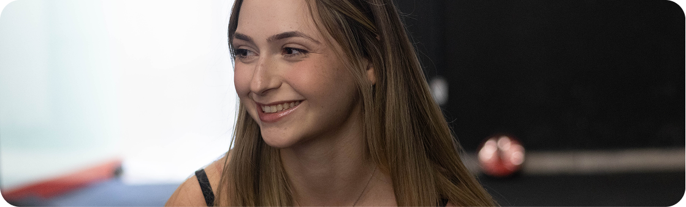
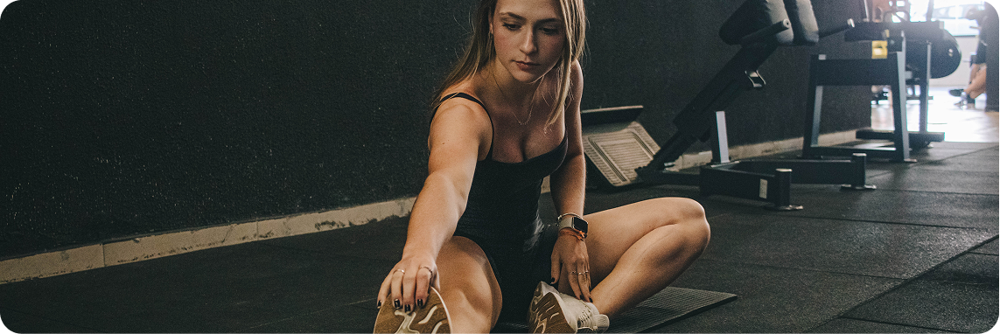
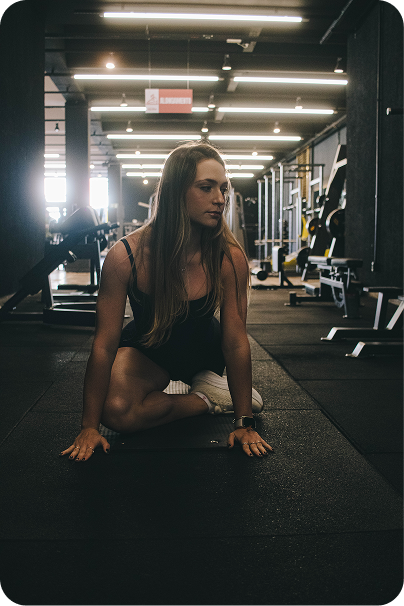

Exercícios ajudam na ansiedade? Entenda como
a atividade física pode melhorar seu bem-estar
Sim. Diversos estudos mostram que a prática regular de exercícios físicos pode contribuir para a redução dos sintomas de ansiedade e para a melhora da saúde mental.
Durante o exercício, o organismo libera substâncias como endorfinas, serotonina e dopamina, relacionadas à sensação de bem-estar, prazer e relaxamento. Além disso, a atividade física ajuda a diminuir os níveis de estresse acumulados ao longo do dia e melhora a capacidade do corpo de lidar com situações desafiadoras.
Embora o exercício não seja uma cura para transtornos de ansiedade, ele pode fazer parte de um plano de cuidados orientado por profissionais de saúde.

Como a atividade física influencia a saúde mental?
Os benefícios vão muito além do condicionamento físico.
Redução do estresse
Movimentar o corpo ajuda a diminuir a tensão acumulada e favorece uma sensação de relaxamento após o treino.
Melhora da qualidade do sono
Dormir bem é um dos fatores mais importantes para manter o equilíbrio emocional. Pessoas fisicamente ativas costumam apresentar uma melhor qualidade de sono.
Aumento da autoestima
Perceber a própria evolução, desenvolver força e criar uma rotina saudável contribuem para aumentar a confiança e a autoestima.
Mais disposição no dia a dia
A prática regular de exercícios melhora a capacidade física, reduz o cansaço e aumenta os níveis de energia para as atividades diárias.
Momento de desconexão
Treinar também pode ser uma oportunidade para reduzir o tempo de exposição às telas, aliviar preocupações e direcionar o foco para o próprio corpo.
Quais exercícios podem ajudar?
Não existe um único exercício ideal para todas as pessoas.
O mais importante é encontrar uma atividade que seja prazerosa e que possa ser mantida de forma consistente. Entre as opções mais comuns estão:
A regularidade costuma ser mais importante do que a intensidade. Pequenas mudanças de hábito já podem trazer benefícios ao longo do tempo.

Um dos desafios de quem convive com ansiedade é manter hábitos saudáveis de forma constante.
Ter horários definidos para treinar ajuda a criar previsibilidade na rotina, melhora a organização do dia e reduz a sensação de estar sempre sobrecarregado.
Além disso, estabelecer pequenas metas e acompanhar a própria evolução gera motivação para continuar cuidando da saúde.
Como uma academia pode ajudar nesse processo?
Uma academia oferece mais do que equipamentos para treinar. Quando existe acompanhamento profissional e um ambiente acolhedor, torna-se mais fácil manter a prática de exercícios de forma segura e consistente.
Os principais benefícios incluem:
Orientação profissional
Professores podem adaptar os exercícios ao seu nível de condicionamento e acompanhar sua evolução.
Ambiente motivador
Treinar em um espaço organizado e preparado incentiva a criação de uma rotina saudável.
Variedade de modalidades
Musculação, aulas coletivas, pilates e outras atividades permitem encontrar a modalidade que mais combina com cada pessoa.
Consistência
Ter um local dedicado ao exercício facilita a manutenção do hábito, um dos fatores mais importantes para obter benefícios físicos e emocionais.
Exercício físico substitui o
tratamento da ansiedade?
Não.
A atividade física é uma importante aliada da saúde mental, mas não substitui tratamentos indicados por médicos ou psicólogos quando eles são necessários. Em muitos casos, a combinação entre acompanhamento profissional, hábitos saudáveis, boa alimentação, sono de qualidade e exercícios físicos faz parte de uma estratégia completa para promover o bem-estar.

Cuidar da saúde mental também é cuidar do corpo. A prática regular de exercícios físicos pode contribuir para reduzir o estresse, melhorar o humor, aumentar a disposição e promover mais qualidade de vida. Quando aliada a uma rotina consistente e ao acompanhamento de profissionais qualificados, a atividade física se torna uma grande aliada para quem busca mais equilíbrio e bem-estar.
Se você deseja dar o primeiro passo para uma vida mais ativa, conheça uma das unidades da Academia Ajuste. Estamos presentes em Campo Mourão, Xaxim (Curitiba), Toledo e Guarapuava, oferecendo estrutura completa, equipamentos modernos, acompanhamento profissional e um ambiente preparado para receber alunos de todos os níveis de experiência.
Escolha a unidade mais próxima de você e venha descobrir como um treino orientado pode transformar não apenas o seu condicionamento físico, mas também a sua qualidade de vida. Esperamos por você na Academia Ajuste!